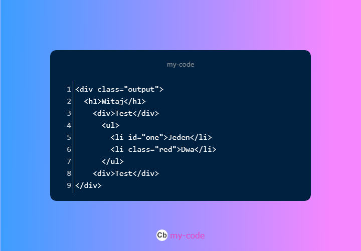

Jako punkt wyjścia wykorzystaj przedstawiony tutaj kod HTML.
Wykonaj wymienione tutaj kroki (i poeksperymentuj), aby dokładnie zrozumieć, w jaki sposób za pomocą kodu JavaScript można przeprowadzać operacje na elementach HTML-a.
<ul>
zawierający element o klasie output. Identyfikator tego elementu
<ul>
zmień na mainList.
<div>
i następnie jako tablicę wyświetl je w konsoli.
<div>. Wartością identyfikatora powinna być liczba wskazująca numer elementu
tego typu w danych wyjściowych. W pętli zastosuj także naprzemienny
kolor dla treści elementów w elemencie klasy output — na przemian
czerwony i niebieski.